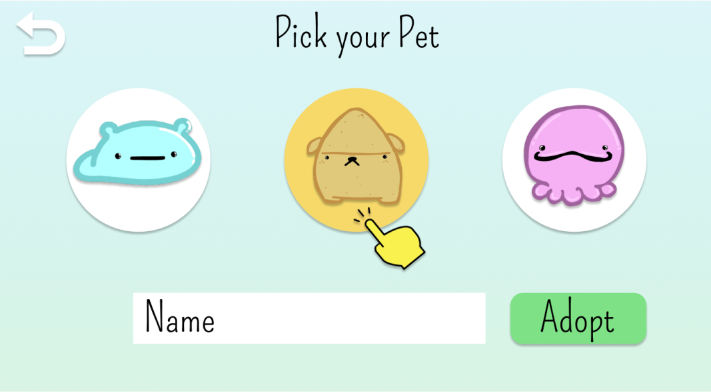
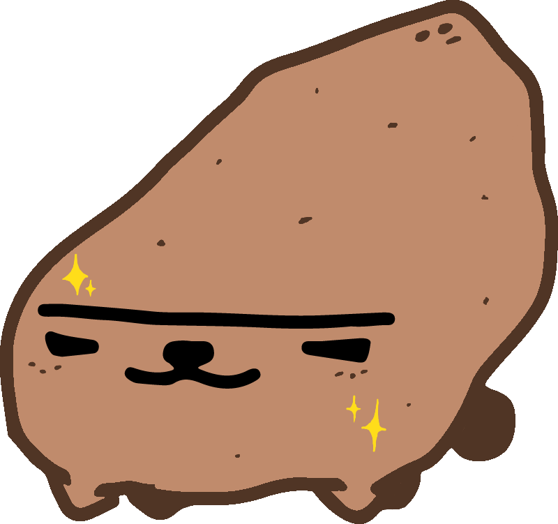
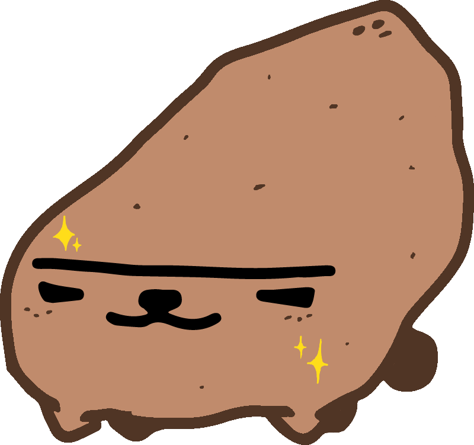
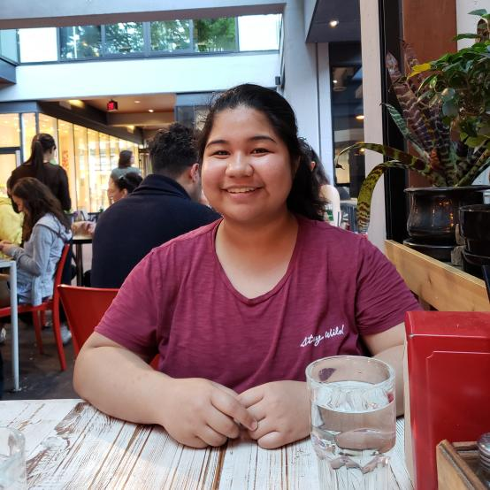
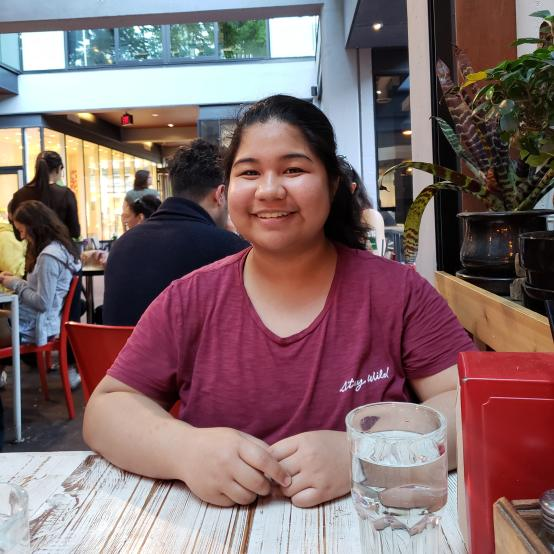

What is Icopico?
Icopico is a game that helps you integrate ecologically restorative action into your routine.
By completing easy, daily sustainability tasks, you help your very own Icopico pet grow!
What kind of pet will your Icopico grow into?
How to Play


 

You will first need to choose your pet. Which Icopico best represents you?
Like any pet, your Icopico needs food and attention. Make sure to maintain its hunger and happiness!
When you complete tasks, your Icopico will gain activity points. These new sustainability tasks appear every day.
As you complete tasks and tend to your Icopico, it may gain enough experience to evolve...!

 

 Jennifer
JenniferHobbs Joanna
Ho Louis
Rivest Mikhaela
Layon Nicole
Jingco
Jennifer's primary role is game logic design and development.
She is a student at BCIT in the technical programming option.
She enjoys creating games in Unity and her favorite programming language is C#.
In her spare time she can be found carrying you in League of Legends.
Joanna is a BCIT computing student in the technical programming option.
She spends her time enjoying the creative process in game dev, solving coding problems and hoarding succulent treats.
As a student in Computer Systems Technology, Louis is always looking for ways to broaden his skill set.
When he isn't doodling, you will usually find him testing new recipes in the kitchen.
Louis is responsible for some of the UI, CSS/Javascript design, and art assets.
Mikhaela worked on the setting up the app's MySQL database and back-end.
She aims to create an impact on the community by providing technical solutions and bringing people together.
When she's not typing away on her laptop, she's either watching a movie, drinking tea, or exploring Vancouver.
Nicole is one of the team's designers in charge of the UI and UX design.
She likes to sleep, eat and is an avid Esports supporter, mainly for the Vancouver Titans Overwatch team.
She consumed the most ice cream during the project. She also made the most Vine, The Office and meme references.